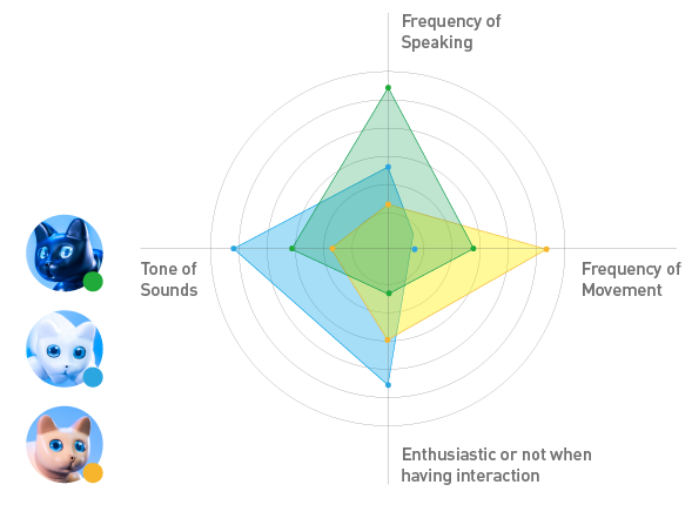

5. 性格养成
5.1 了解你的MarsCat火星仿生猫
MarsCat is the world's first bionic pet cat developed by Elephant Robotics, aiming to be a home robot, a robotic pet to comfort you and surprise you.
MarsCat can walk, run, sleep, sit, stretch, bites nail, knead and even bury litter although she won't produce any waste. It may express different emotions by different meows or gestures. It can feel your touch, hear your voice, see your face and play with toys.
Every MarsCat is unique from its eye to body. It also has different characters and personalities. Some cats are vivacious, while some are lazy. Some cats are aloof while some are more close to human. Also, some cats are super curious and they meow frequently.
MarsCat is built to allow you to shape its personalities according to the way you pet it. More interactions with MarsCat will impel it to be more close to you. More conversations with MarsCat will impel it to meow to you often. Every time you touch it, talk to it or even let it see you, will change its personality.

5.2 MarsCat火星仿生猫的日常
With bionic designed and high-tech, MarsCat have independent and autonomous living systems. Different types of sensors including image, voice and touch are integrated to carry out feature extraction, pattern recognition and action planning to build intelligent brain for MarsCat.
Just like a real cat, MarsCat has capabilities to understand where it is or whom it is with, and acts based on its feelings and instincts. You will never know what MarsCat will do next. Free to walk, play with toys or sleep in a daze? MarsCat have more freedom to do what she wants to do.
Rather than a toy, MarsCat is more like a friend or a family that accompanies you to grow up together.

5.3 Interactions with MarsCat
MarsCat is a good companion, it is fully responsive and interactive.
It has touch,image and voice recognition, can feel your touch, hear your voice, see your face or even play with toys and etc.
| 眼睛 图像 |
含义 |
|---|---|
 |
低电量，MarsCat火星仿生猫需要充电 |
 |
MarsCat火星仿生猫正在充电 |
 |
当MarsCat火星仿生猫看到小蓝球的时候，它的眼睛图像可能会如图所示，MarsCat火星仿生猫是一只有个性的猫，有时候即使它看到了小篮球，它的眼睛也不会发生变化。 |
 |
当MarsCat火星仿生猫看到人脸的时候，它的眼睛图像可能会如图所示，MarsCat火星仿生猫是一只有个性的猫，有时候即使它看到了你，它的眼睛也不会发生变化。 |
 |
当MarsCat火星仿生猫听到你的声音时，它的眼睛可能会变化如图 |
 |
当MarsCat火星仿生猫感到晕眩，或者它仍然犯困时，它的眼睛可能会有这样的图像。 |
 |
当MarsCat火星仿生猫看到它的猫碗，并且当时它感到饥饿。 |
 |
当MarsCat火星仿生猫享受你的抚摸并且感到愉悦 |
 |
当你抱MarsCat火星仿生猫并且它感到愉悦 |
 |
当MarsCat火星仿生猫在玩玩具或者在自娱自乐 |
 |
出现这个图像，意味着MarsCat火星仿生猫处在边缘，它感觉到有掉落的危险，你应该把它放在一个安全的地方。 |
 |
当MarsCat火星仿生猫摔倒，或者它感到危险时，它的眼睛可能变化如图，你应该把它带到一个安全的地方。 |
 |
MarsCat火星仿生猫感觉温度变高，你应该把它带到一个温度低一点的地方，并让它休息一会。 |
 |
当MarsCat火星仿生猫睡觉时会出现这个图案，如果你在MarsAPP设置了它的睡眠时间，那么它的眼睛就会在那个时间段显示这样的图案 |
5.3.1Touch Recognition: feel you
- MarsCat supports Touch Recognition, you can touch or pick up your MarsCat.
- When you pick up your MarsCat or touch its head, jaw and back or even hug it, it will response to you in different interesting reactions.
- Do not pick up or touch MarsCat with excessive force to avoid the risk of a malfunction.
5.3.2Image Recognition: see you
- MarsCat has a front-view camera on its nose that acts as human or animal eyes, supports Image Recognition, including faces and objects.
- When you show the blue ball or the Cat Teasers (supplied) to your MarsCat or put either of them close to it, MarsCat may show interest or start playing with it.
- You can even pet MarsCat with its own bowl. When MarsCat identifies its bowl, it may appear to be drinking or eating according to its physical conditions.
- Reactions of Image Recognition in default can be added and changed by procedural programming.
5.3.3Voice Recognition: hear you
- MarsCat supports Voice Recognition. MarsCat can response to you in different ways when you communicate with your MarsCat in the following Voice Commands.
- When your MarsCat fails to recognize Voice Commands, please take it to a quieter place and try again.
- The current version of Voice Recognition supports Chinese and English.
- You'd better to call "MarsCat" to awake MarsCat so that these voice conmmands is useful.
| Category | Voice Commands | Description |
|---|---|---|
| Actions | Walk around | Walk |
| Run away | Run | |
| Relax | Stretch | |
| Sit down | Sit down | |
| Stand up | Stand up | |
| Lie down | Lie down | |
| Stop | Stops the actions in progress. | |
| Be quiet | Stops sounds and actions in progress. | |
| Come here | Identify the location of the speaker and walks to him or her. | |
| Go away | MarsCat will leave | |
| Go to eat | Identify the location of the bowl and walks to it. | |
| Look at me | Turns in the direction of the speaker and looks at him or her. | |
| Find your bowl | MarsCat will find his/her bowl | |
| Emotions | Good job | Takes it as a complement and reacts positiely. |
| I like you/I love you | ||
| Thank you | ||
| Well done | ||
| Bad boy | Takes it as a discipline and reacts sadly. | |
| Bad girl |